pacman::p_load(tidyverse,ggridges,ggrepel,ggthemes,ggstatsplot,hrbrthemes,patchwork,dplyr, gifski, gapminder,plotly,gganimate,ggiraph,magick)Take-home Exercise 4: Prototyping Modules for Visual Analytics Shiny Application
1. The Task
In this take-home exercise, I am required to select one of the module of my group’s proposed Shiny application and complete the following tasks:
To evaluate and determine the necessary R packages needed for the Shiny application and ensure that they are supported in R CRAN,
To prepare and test the specific R codes to ensure that they can run and return the correct output as expected,
To determine the parameters and outputs that will be exposed on the Shiny applications, and
To select the appropriate Shiny UI components for exposing the parameters determined above.
All teams must consult the prototype page of AY2022-2023 January Term Group 3: Tanzania Tourism Analysis. There are three main modules in this application: Exploratory Data Analysis & Confirmatory Data Analysis, Cluster Analysis and Decision Tree Analysis. Each of them were prepared by one of the member of the project team which they later combined into the Prototype page of their project website.
Take-home Exercise 4 will be similar to one of the prototype module prepared above in term of content but with the following differences:
I am required to prepare the prototype module report as Take-home Exercise 4 submission. This mean, it has to be published on my own coursework page.
I am required to include a section called UI design for the different components of the UIs for the proposed design.
For storyboarding the UI Design, I will need to consult Storyboard link.
2. About the Project
My project group StormTroopers is working on the topic of climate change.
As a small, low-lying city-state, Singapore is vulnerable to the effects of climate change which has brought about more extreme weather patterns - rising sea levels, dry spells and intense rainfall which at times can lead to flash floods.

Acording to an infographic above by the National Climate Change Secretariat Singapore:
- Daily mean temperatures are projected to increase by 1.4 to 4.6 degrees celsius; and
- The contrast between the wet months (November to January) and dry months (February and June to September) is likely to be more pronounced.
In Jan 2024, the Centre for Climate Research Singapore (CCRS) announced the Third National Climate Change Study (V3) which provided potential scenarios of our future based on low, medium, and high global greenhouse gas emissions.
- Very hot days will become more frequent.
- Extreme daily rainfall is projected to intensify.
- The mean sea level around Singapore is projected to rise up to 1.15m by end century, and up to around 2m by 2150 under the high emissions scenario.
It is important that we better understand how climate change has been affecting Singapore, by understanding the trends in our daily temperatures and rainfall over the years, and utilise historical data to forecast future climate data. It will provide guidance on whether and how Singapore will need to urgently develop ways to mitigate and adapt.
2.1 Issues to address
The scope I am in charge of is Confirmatory Data Analysis which seeks to address the following issues:
Are the changes in rainfall and temperature over the years statistically significant?
Are there really certain months “drier” or “wetter”/ “hotter” or “cooler”?
Are there certain locations “drier” or “wetter”/ “hotter” or “cooler”?
3. The Data
For this take-home exercise and the project, data utilised is the historical climate data from Metrological Service Singapore.
The team downloaded historical daily records from various weather stations across Singapore from 1980 to 2023 via API scrapping as a daily_historical.csv datafile.
4. Set-up
4.1 Installing and loading the required libraries
The following code chunk is used to install the necessary R packages:
4.2 Importing the Dataset
I will import the daily_historical.csv datafile using the following code chunk:
daily_historical <- read_csv("data/daily_historical.csv",locale=locale(encoding="latin1"))
daily_historical# A tibble: 329,156 × 13
station year month day daily_rainfall_total highest_30_min_rainf…¹
<chr> <dbl> <dbl> <dbl> <dbl> <dbl>
1 Macritchie Res… 1980 1 1 0 NA
2 Macritchie Res… 1980 1 2 0 NA
3 Macritchie Res… 1980 1 3 0 NA
4 Macritchie Res… 1980 1 4 0 NA
5 Macritchie Res… 1980 1 5 22.6 NA
6 Macritchie Res… 1980 1 6 49.6 NA
7 Macritchie Res… 1980 1 7 2.4 NA
8 Macritchie Res… 1980 1 8 0 NA
9 Macritchie Res… 1980 1 9 0 NA
10 Macritchie Res… 1980 1 10 0 NA
# ℹ 329,146 more rows
# ℹ abbreviated name: ¹highest_30_min_rainfall
# ℹ 7 more variables: highest_60_min_rainfall <dbl>,
# highest_120_min_rainfall <dbl>, mean_temperature <dbl>,
# maximum_temperature <dbl>, minimum_temperature <dbl>,
# mean_wind_speed <dbl>, max_wind_speed <dbl>As can be seen, there are a total of 329,156 records across 13 variables.
4.3 Data Cleaning
4.3.1 Remove missing values
Before proceeding with analysis, we first remove any missing values in the data using the following code chunk:
daily_historical <- drop_na(daily_historical)
daily_historical# A tibble: 44,856 × 13
station year month day daily_rainfall_total highest_30_min_rainfall
<chr> <dbl> <dbl> <dbl> <dbl> <dbl>
1 Admiralty 2014 1 1 0 0
2 Admiralty 2014 1 2 0 0
3 Admiralty 2014 1 3 4.6 4.4
4 Admiralty 2014 1 4 3.8 3.8
5 Admiralty 2014 1 5 3.6 1.2
6 Admiralty 2014 1 6 80 21.8
7 Admiralty 2014 1 7 2 2
8 Admiralty 2014 1 8 0 0
9 Admiralty 2014 1 9 2.6 1.4
10 Admiralty 2014 1 10 0 0
# ℹ 44,846 more rows
# ℹ 7 more variables: highest_60_min_rainfall <dbl>,
# highest_120_min_rainfall <dbl>, mean_temperature <dbl>,
# maximum_temperature <dbl>, minimum_temperature <dbl>,
# mean_wind_speed <dbl>, max_wind_speed <dbl>As can be seen, what remains is a total of 44,856 records across 13 variables.
4.3.2 Ensuring alignment in time period of records across weather stations
To ensure consistent comparison across all weather stations, the same time period would have to be used. As such, we need to check the starting and ending year of data across all weather stations:
daily_historical_start <- daily_historical %>%
group_by(station) %>%
summarise(earliest_year = min(year))
daily_historical_start# A tibble: 13 × 2
station earliest_year
<chr> <dbl>
1 Admiralty 2014
2 Ang Mo Kio 2014
3 Changi 2014
4 Choa Chu Kang (South) 2014
5 Clementi 2014
6 East Coast Parkway 2014
7 Jurong (West) 2014
8 Jurong Island 2014
9 Newton 2014
10 Pasir Panjang 2014
11 Sentosa Island 2014
12 Tai Seng 2014
13 Tuas South 2014daily_historical_start <- daily_historical %>%
group_by(station) %>%
summarise(latest_year = max(year))
daily_historical_start# A tibble: 13 × 2
station latest_year
<chr> <dbl>
1 Admiralty 2023
2 Ang Mo Kio 2023
3 Changi 2023
4 Choa Chu Kang (South) 2023
5 Clementi 2023
6 East Coast Parkway 2023
7 Jurong (West) 2023
8 Jurong Island 2023
9 Newton 2023
10 Pasir Panjang 2023
11 Sentosa Island 2023
12 Tai Seng 2023
13 Tuas South 2023As the starting and ending year of weather data across all 13 weather stations is 2014 and 2023 respectively, no further steps are required to align the time period of the data.
4.3.3 Converting data types for year, month and day
Based on a glimpse of the daily_historical dataframe, the data types for year, month and day are continuous.
glimpse(daily_historical)Rows: 44,856
Columns: 13
$ station <chr> "Admiralty", "Admiralty", "Admiralty", "Admir…
$ year <dbl> 2014, 2014, 2014, 2014, 2014, 2014, 2014, 201…
$ month <dbl> 1, 1, 1, 1, 1, 1, 1, 1, 1, 1, 1, 1, 1, 1, 1, …
$ day <dbl> 1, 2, 3, 4, 5, 6, 7, 8, 9, 10, 11, 12, 13, 14…
$ daily_rainfall_total <dbl> 0.0, 0.0, 4.6, 3.8, 3.6, 80.0, 2.0, 0.0, 2.6,…
$ highest_30_min_rainfall <dbl> 0.0, 0.0, 4.4, 3.8, 1.2, 21.8, 2.0, 0.0, 1.4,…
$ highest_60_min_rainfall <dbl> 0.0, 0.0, 4.4, 3.8, 1.6, 26.2, 2.0, 0.0, 2.0,…
$ highest_120_min_rainfall <dbl> 0.0, 0.0, 4.6, 3.8, 2.0, 30.6, 2.0, 0.0, 2.6,…
$ mean_temperature <dbl> 26.3, 26.9, 26.5, 26.4, 24.6, 25.0, 26.5, 26.…
$ maximum_temperature <dbl> 28.8, 30.7, 29.5, 31.2, 25.3, 27.2, 30.6, 30.…
$ minimum_temperature <dbl> 24.3, 24.6, 24.9, 24.7, 23.6, 23.1, 24.3, 24.…
$ mean_wind_speed <dbl> 10.8, 11.5, 9.7, 8.1, 8.4, 6.2, 8.0, 11.7, 6.…
$ max_wind_speed <dbl> 34.2, 38.2, 34.2, 32.8, 27.0, 29.5, 27.4, 34.…For ease of further analysis, we will convert them to categorical factor data type instead:
daily_historical <- daily_historical %>%
mutate_at(vars(year,month,day),as.factor)
glimpse(daily_historical)Rows: 44,856
Columns: 13
$ station <chr> "Admiralty", "Admiralty", "Admiralty", "Admir…
$ year <fct> 2014, 2014, 2014, 2014, 2014, 2014, 2014, 201…
$ month <fct> 1, 1, 1, 1, 1, 1, 1, 1, 1, 1, 1, 1, 1, 1, 1, …
$ day <fct> 1, 2, 3, 4, 5, 6, 7, 8, 9, 10, 11, 12, 13, 14…
$ daily_rainfall_total <dbl> 0.0, 0.0, 4.6, 3.8, 3.6, 80.0, 2.0, 0.0, 2.6,…
$ highest_30_min_rainfall <dbl> 0.0, 0.0, 4.4, 3.8, 1.2, 21.8, 2.0, 0.0, 1.4,…
$ highest_60_min_rainfall <dbl> 0.0, 0.0, 4.4, 3.8, 1.6, 26.2, 2.0, 0.0, 2.0,…
$ highest_120_min_rainfall <dbl> 0.0, 0.0, 4.6, 3.8, 2.0, 30.6, 2.0, 0.0, 2.6,…
$ mean_temperature <dbl> 26.3, 26.9, 26.5, 26.4, 24.6, 25.0, 26.5, 26.…
$ maximum_temperature <dbl> 28.8, 30.7, 29.5, 31.2, 25.3, 27.2, 30.6, 30.…
$ minimum_temperature <dbl> 24.3, 24.6, 24.9, 24.7, 23.6, 23.1, 24.3, 24.…
$ mean_wind_speed <dbl> 10.8, 11.5, 9.7, 8.1, 8.4, 6.2, 8.0, 11.7, 6.…
$ max_wind_speed <dbl> 34.2, 38.2, 34.2, 32.8, 27.0, 29.5, 27.4, 34.…4.4 Data Wrangling
We will analyse weather and rainfall data separately and hence we will create two dataframes historical_temp and historical_rainfall from the dataset daily_historical:
historical_temp <- daily_historical %>% select(1:4,9:11)
historical_temp# A tibble: 44,856 × 7
station year month day mean_temperature maximum_temperature
<chr> <fct> <fct> <fct> <dbl> <dbl>
1 Admiralty 2014 1 1 26.3 28.8
2 Admiralty 2014 1 2 26.9 30.7
3 Admiralty 2014 1 3 26.5 29.5
4 Admiralty 2014 1 4 26.4 31.2
5 Admiralty 2014 1 5 24.6 25.3
6 Admiralty 2014 1 6 25 27.2
7 Admiralty 2014 1 7 26.5 30.6
8 Admiralty 2014 1 8 26.9 30.8
9 Admiralty 2014 1 9 25.4 27.5
10 Admiralty 2014 1 10 26.9 31.9
# ℹ 44,846 more rows
# ℹ 1 more variable: minimum_temperature <dbl>historical_rainfall <- daily_historical %>% select(1:8)
historical_rainfall# A tibble: 44,856 × 8
station year month day daily_rainfall_total highest_30_min_rainfall
<chr> <fct> <fct> <fct> <dbl> <dbl>
1 Admiralty 2014 1 1 0 0
2 Admiralty 2014 1 2 0 0
3 Admiralty 2014 1 3 4.6 4.4
4 Admiralty 2014 1 4 3.8 3.8
5 Admiralty 2014 1 5 3.6 1.2
6 Admiralty 2014 1 6 80 21.8
7 Admiralty 2014 1 7 2 2
8 Admiralty 2014 1 8 0 0
9 Admiralty 2014 1 9 2.6 1.4
10 Admiralty 2014 1 10 0 0
# ℹ 44,846 more rows
# ℹ 2 more variables: highest_60_min_rainfall <dbl>,
# highest_120_min_rainfall <dbl>5. Confirmatory Data Analysis (CDA)
5.1 CDA #1 - Are the changes in rainfall and temperature over the years statistically significant?
The first CDA that I will address is whether changes in rainfall and temperature over the years are statistically significant
As the data ranges from 2014 to 2023, there are 10 years worth of data.
5.1.1 Historical rainfall over the years
historical_rainfall_year <- historical_rainfall %>%
group_by(station,year) %>%
summarise(yearly_rainfall = sum(daily_rainfall_total))
DT::datatable(historical_rainfall_year,class = "compact")p1 <- ggplot(historical_rainfall_year,
aes(y=yearly_rainfall,
x = year,
group = station,
color = station)) +
geom_line() +
facet_wrap(~station,scales = "free_x") +
labs(title="Yearly rainfall across weather stations from 2014 to 2023",
y = "Rainfall volume (mm)",
x = "Year") +
theme_minimal() +
theme(axis.text.x=element_text(angle=90,hjust=1))
p1 <- ggplotly(p1, tooltip="all",width = 800,height = 600) %>%
layout(width = 800, height = 600)
p1Over the years, across the 13 weather stations, the rainfall volume is observed to have increased albeit by different intensities. We need to examine if the differences are statistically different.
Before we do so, we will need to determine whether the rainfall for each year follows a normal or non-normal distribution and we visualise the distribution of rainfall using ridgeline plots, using the code chunk below.
p2 <- ggplot(historical_rainfall,
aes(x = daily_rainfall_total,
y = year,
fill = 0.5 - abs(0.5-stat(ecdf)))) +
stat_density_ridges(geom = "density_ridges_gradient",
calc_ecdf = TRUE) +
scale_fill_viridis_c(name = "Tail probability",
direction = -1,
option="turbo")+
facet_wrap(~station) +
theme_ridges(font_size = 25)+
coord_cartesian(xlim = c(0,50))+
labs(title="Distribution of Daily Rainfall from 2014 to 2023 (zoomed in)",
y="Station",
x="Rainfall Volume (mm)")
p2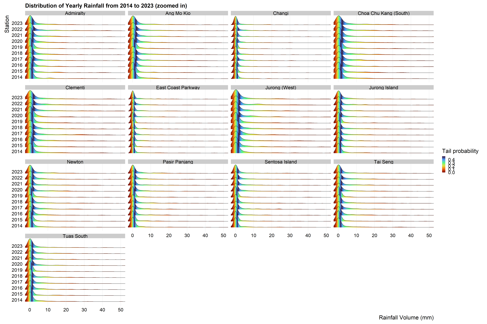
p3 <- ggplot(historical_rainfall,
aes(x = daily_rainfall_total,
y = year,
fill = 0.5 - abs(0.5-stat(ecdf)))) +
stat_density_ridges(geom = "density_ridges_gradient",
calc_ecdf = TRUE) +
scale_fill_viridis_c(name = "Tail probability",
direction = -1,
option="turbo")+
facet_wrap(~station) +
theme_ridges(font_size = 25)+
labs(title="Distribution of Daily Rainfall from 2014 to 2023",
y="Station",
x="Rainfall Volume (mm)")
p3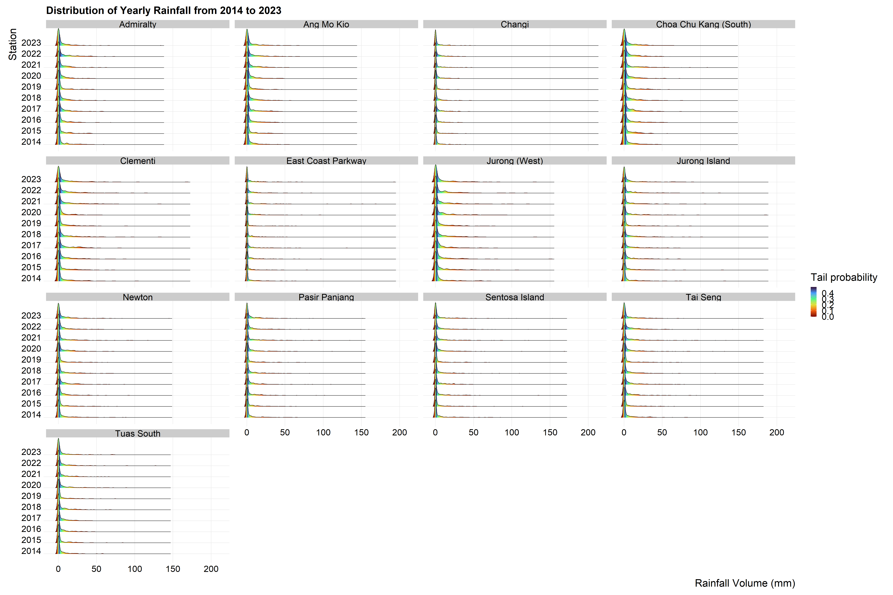
As can be seen from the plots above, the distribution of rainfall is not normal (with the plots right-skewed), as such, I will utilise non-parametric test.
The hypothesis is as follows:
H0: There is no difference between mean rainfall per year across 10 years.
H1: There is a difference between mean rainfall per year across 10 years.
p4 <- ggbetweenstats(
data = historical_rainfall_year,
x = year,
y = yearly_rainfall,
type = "np",
messages = FALSE,
title="Distribution of Rainfall across 10 years (2014 to 2023)",
ylab = "Rainfall volume (mm)",
xlab = "Year",
ggsignif.args = list(textsize = 5)
) +
theme(text = element_text(size = 20), plot.title=element_text(size=20))
p4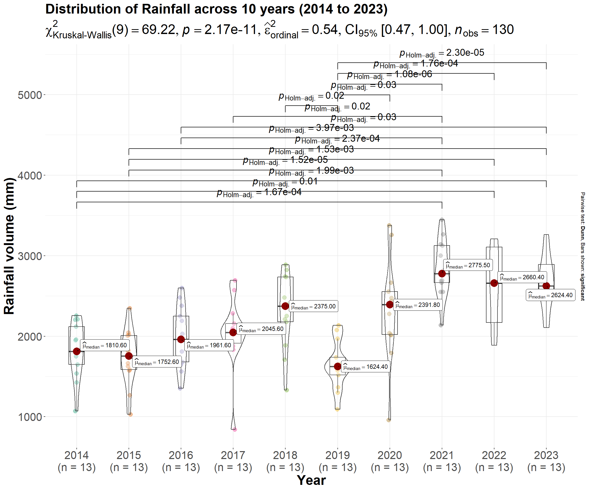
As the p-values of the test above are < 0.05, we reject the null hypothesis at alpha = 0.05. There is sufficient evidence to indicate that there is a difference in the mean rainfall per year across the years.
The hypothesis is as follows:
H0: There is no difference between mean daily rainfall across 10 years.
H1: There is a difference between mean daily rainfall across 10 years.
p5 <- ggbetweenstats(
data = historical_rainfall,
x = year,
y = daily_rainfall_total,
type = "np",
messages = FALSE,
title="Distribution of Rainfall across 10 years (2014 to 2023)",
ylab = "Rainfall volume (mm)",
xlab = "Year",
ggsignif.args = list(textsize = 5)
) +
theme(text = element_text(size = 20),plot.title=element_text(size=20))
p5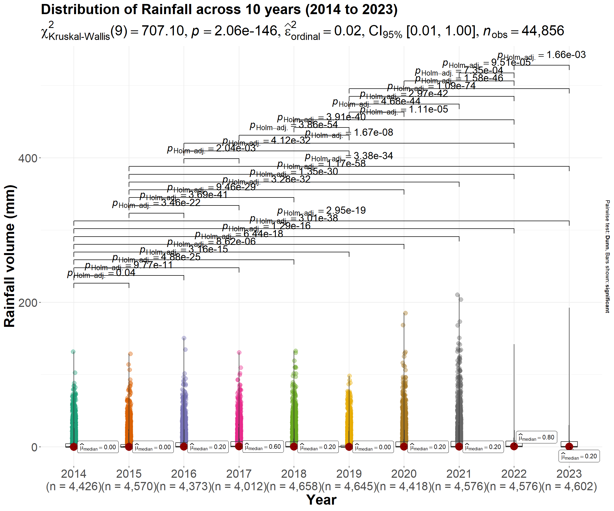
As the p-values of the test above are < 0.05, we reject the null hypothesis at alpha = 0.05. There is sufficient evidence to indicate that there is a difference in the mean daily rainfall across the years.
5.1.2 Historical temperature over the years
historical_temp_year <- historical_temp %>%
group_by(station,year) %>%
summarise(median_mean_temp = median(mean_temperature),
median_max_temp = median(maximum_temperature),
median_min_temp = median(minimum_temperature))
DT::datatable(historical_temp_year,class = "compact")p6 <- ggplot(historical_temp_year,
aes(y = median_mean_temp,
x = year,
group = station,
color = station)) +
geom_line()+
facet_wrap(~station,scales = "free_x") +
labs(title="Median daily mean temperature across weather stations from 2014 to 2023",
y = "Temperature (°C)",
x = "Year") +
theme_minimal() +
theme(axis.text.x=element_text(angle=90,hjust=1))
p6 <- ggplotly(p6, tooltip="all",width = 800,height = 600) %>%
layout(width = 800, height = 600)
p6Based on observation, it seems like median daily mean temperature for each weather station did not undergo significant changes over the years from 2014 to 2023.
p7 <- ggplot(historical_temp_year,
aes(y = median_max_temp,
x = year,
group = station,
color = station)) +
geom_line() +
facet_wrap(~station,scales = "free_x") +
labs(title="Median daily max temperature across weather stations from 2014 to 2023",
y = "Temperature (°C)",
x = "Year") +
theme_minimal() +
theme(axis.text.x=element_text(angle=90,hjust=1))
p7 <- ggplotly(p7, tooltip="all",width = 800,height = 600) %>%
layout(width = 800, height = 600)
p7Based on observation, it seems like median daily max temperature for each weather station did not undergo significant changes over the years from 2014 to 2023. Slight increases observed for Choa Chu Kang (South), Clementi, East Coast Parkway, Newton and Sentosa Island weather stations.
p8 <- ggplot(historical_temp_year,
aes(y = median_min_temp,
x = year,
group = station,
color = station)) +
geom_line() +
facet_wrap(~station,scales = "free_x") +
labs(title="Median daily min temperature across weather stations from 2014 to 2023",
y = "Temperature (°C)",
x = "Year") +
theme_minimal() +
theme(axis.text.x=element_text(angle=90,hjust=1))
p8 <- ggplotly(p8, tooltip="all",width = 800,height = 600) %>%
layout(width = 800, height = 600)
p8Based on observation, it seems like median daily minimum temperature for each weather station did not undergo significant changes over the years from 2014 to 2023.
Likewise, to determine whether the changes in the median daily mean, median daily maximum and median daily minimum temperatures are signficant, we will need to determine whether the temperature data follows a normal or non-normal distribution. We visualise the distribution using ridgeline plots, using the code chunks below.
ggplot(historical_temp,
aes(x = mean_temperature,
y = year,
fill = 0.5 - abs(0.5-stat(ecdf)))) +
stat_density_ridges(geom = "density_ridges_gradient",
calc_ecdf = TRUE) +
scale_fill_viridis_c(name = "Tail probability",
direction = -1,
option="turbo")+
facet_wrap(~station) +
theme_ridges(font_size = 25)+
labs(title="Distribution of Daily Mean Temperature from 2014 to 2023",
y="Station",
x="Temperature (°C)")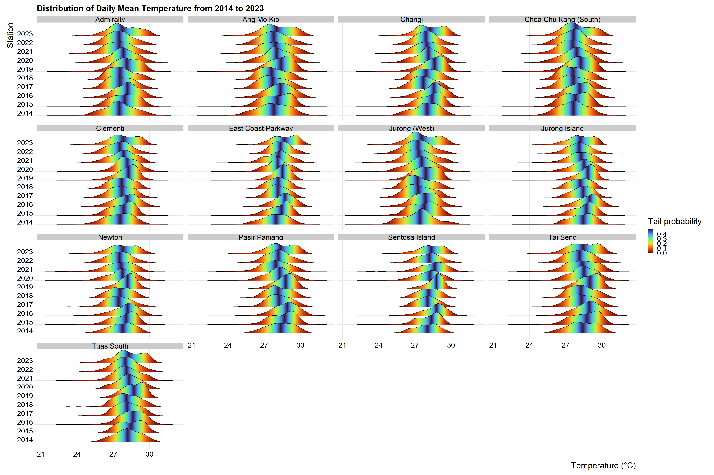
As can be seen from the plot above, the distribution of daily mean temperature is not normal, as such, non-parametric test will be used.
ggplot(historical_temp,
aes(x = maximum_temperature,
y = year,
fill = 0.5 - abs(0.5-stat(ecdf)))) +
stat_density_ridges(geom = "density_ridges_gradient",
calc_ecdf = TRUE) +
scale_fill_viridis_c(name = "Tail probability",
direction = -1,
option="turbo")+
facet_wrap(~station) +
theme_ridges(font_size = 25)+
labs(title="Distribution of Daily Maximum Temperature from 2014 to 2023",
y="Station",
x="Temperature (°C)")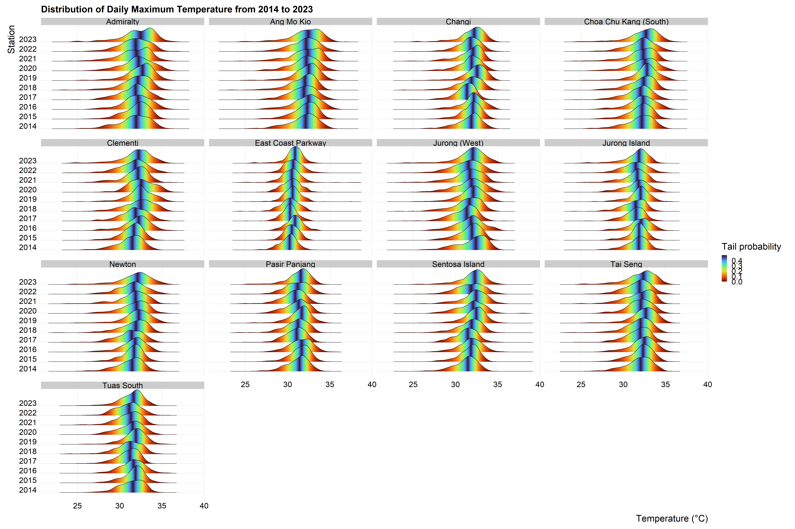
As can be seen from the plot above, the distribution of daily maximum temperature is not normal, as such, non-parametric test will be used.
ggplot(historical_temp,
aes(x = minimum_temperature,
y = year,
fill = 0.5 - abs(0.5-stat(ecdf)))) +
stat_density_ridges(geom = "density_ridges_gradient",
calc_ecdf = TRUE) +
scale_fill_viridis_c(name = "Tail probability",
direction = -1,
option="turbo")+
facet_wrap(~station) +
theme_ridges(font_size = 25)+
labs(title="Distribution of Daily Minimum Temperature from 2014 to 2023",
y="Station",
x="Temperature (°C)")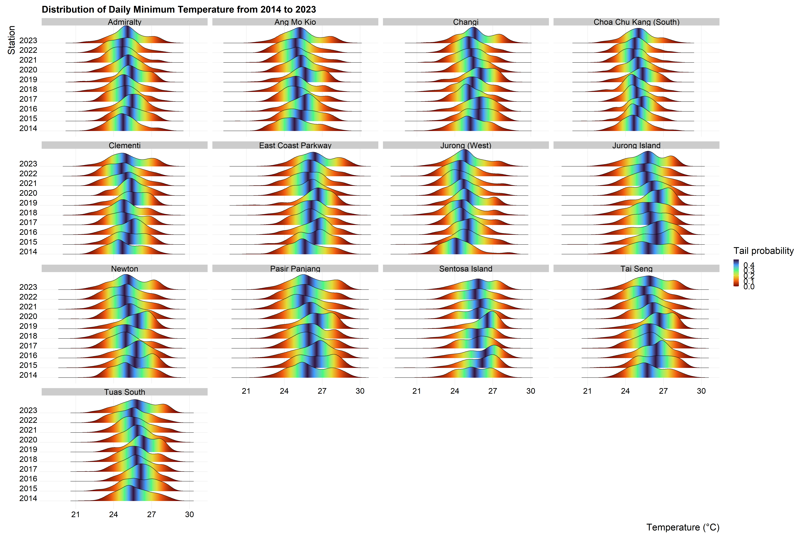
As can be seen from the plot above, the distribution of daily minimum temperature is not normal, as such, non-parametric test will be used.
The hypothesis is as follows:
H0: There is no difference between mean daily mean temperature across 10 years.
H1: There is a difference between mean daily mean temperature across 10 years.
ggbetweenstats(
data = historical_temp,
x = year,
y = mean_temperature,
type = "np",
messages = FALSE,
title="Distribution of Daily Mean Temperature across 10 years (2014 to 2023)",
ylab = "Temperature (°C)",
xlab = "Year",
ggsignif.args = list(textsize = 5)
) +
theme(text = element_text(size = 20),plot.title=element_text(size=20))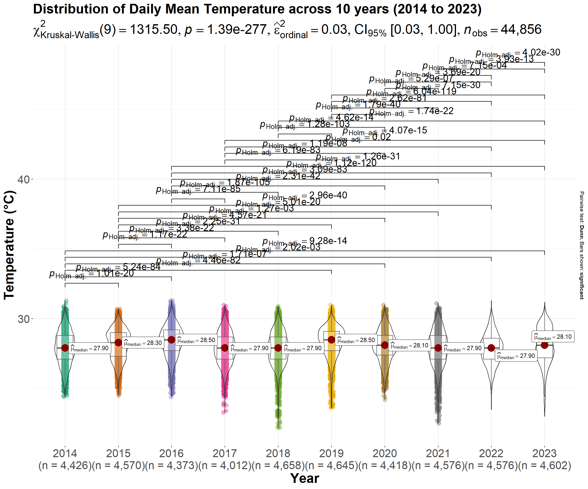
As the p-values of the test above are < 0.05, we reject the null hypothesis at alpha = 0.05. There is sufficient evidence to indicate that there is a difference in the mean daily mean temperature across the years.
The hypothesis is as follows:
H0: There is no difference between mean daily max temperature across 10 years.
H1: There is a difference between mean daily max temperature across 10 years.
ggbetweenstats(
data = historical_temp,
x = year,
y = maximum_temperature,
type = "np",
messages = FALSE,
title="Distribution of Daily Max Temperature across 10 years (2014 to 2023)",
ylab = "Temperature (°C)",
xlab = "Year",
ggsignif.args = list(textsize = 5)
) +
theme(text = element_text(size = 20),plot.title=element_text(size=20))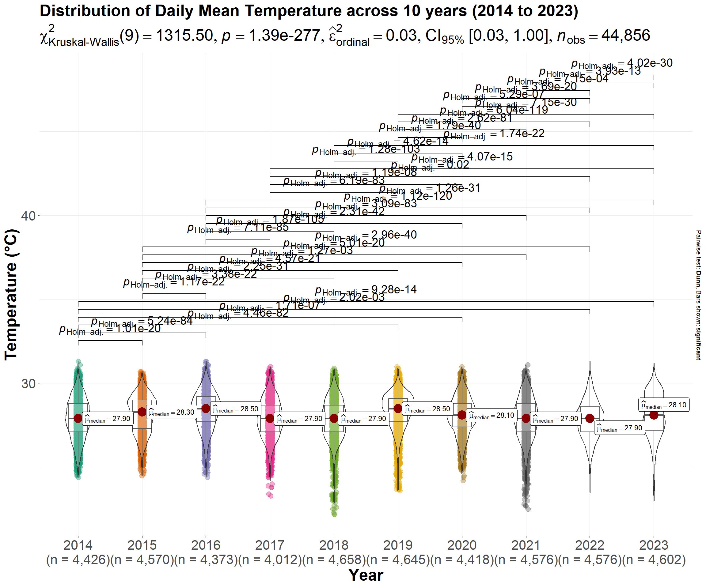
As the p-values of the test above are < 0.05, we reject the null hypothesis at alpha = 0.05. There is sufficient evidence to indicate that there is a difference in the mean daily max temperature across the years.
The hypothesis is as follows:
H0: There is no difference between mean daily min temperature across 10 years.
H1: There is a difference between mean daily min temperature across 10 years.
ggbetweenstats(
data = historical_temp,
x = year,
y = minimum_temperature,
type = "np",
messages = FALSE,
title="Distribution of Daily Min Temperature across 10 years (2014 to 2023)",
ylab = "Temperature (°C)",
xlab = "Year",
ggsignif.args = list(textsize = 5)
) +
theme(text = element_text(size = 20),plot.title=element_text(size=20))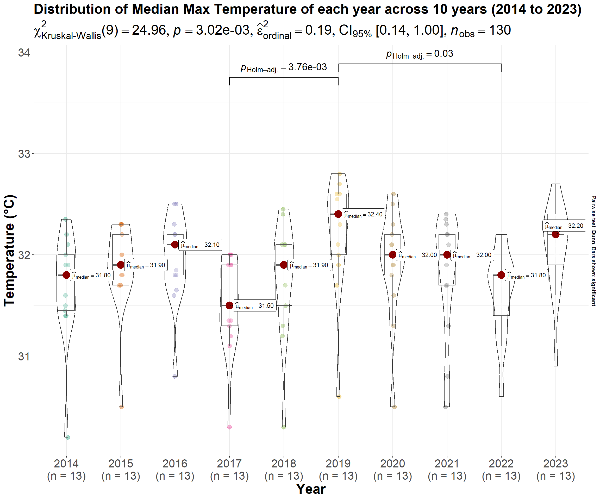
As the p-values of the test above are < 0.05, we reject the null hypothesis at alpha = 0.05. There is sufficient evidence to indicate that there is a difference in the mean daily min temperature across the years.
5.2 CDA #2 - Are there really certain months “drier” or “wetter”/ “hotter” or “cooler”?
5.2.1 Rainfall across different months
5.2.2 Temperature across different months
5.3 CDA #3 - Are there certain locations “drier” or “wetter”/ “hotter” or “cooler”?
5.3.1 Rainfall across different weather stations
The hypothesis is as follows:
H0: There is no difference between mean daily rainfall across weather stations.
H1: There is a difference between mean daily rainfall across weather stations.
ggbetweenstats(
data = historical_rainfall,
x = station,
y = daily_rainfall_total,
type = "np",
messages = FALSE,
title="Distribution of Daily Rainfall by Station",
ylab = "Rainfall volume (mm)",
xlab = "Station",
ggsignif.args = list(textsize = 3)
) +
theme(axis.text.x = element_text(angle = 90, vjust = 1, hjust = 1),
plot.title = element_text(size = 15),
text = element_text(size = 15))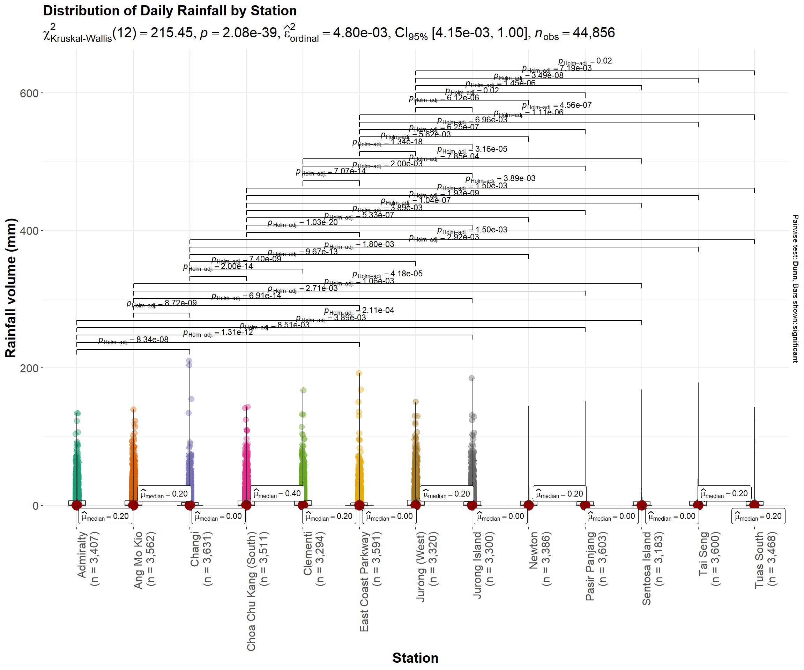